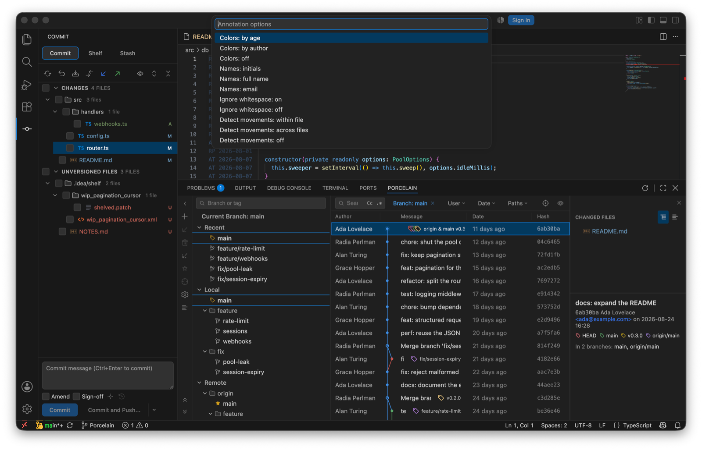

In the editor context menu, or from the Git Operations popup. It draws an author-and-date column beside every line, and hovering a line shows the commit's subject, author, date and short hash. Uncommitted lines are marked as such. Run it again to hide the column.
| Option | Values |
|---|---|
| Colour lines | By age, by author, or not at all. |
| Names | Initials, full name, or email. |
| Ignore whitespace | Blame through re-indents (-w). |
| Follow moved lines | Within a file (-M), or across files (-C). |

In the editor and explorer context menus. The Git Log filters to the commits that touched the file, shown as a chip in the toolbar, and every commit's changed-files pane offers Show Diff, Open Repository Version and History Up to Here, which re-roots the history at that commit.
Search Commits… in the Command Palette or the operations popup finds a commit by message or by hash, then copies its revision.